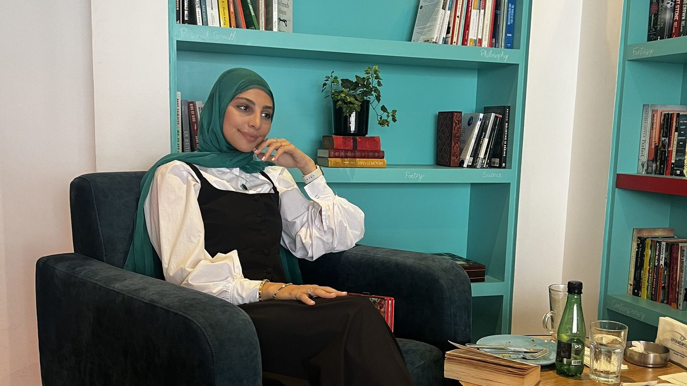

إدارة الوزن
سواء كان هدفك خسارة الوزن أو زيادته أو إيجاد توازن صحي ومستدام، نعمل معاً لإيجاد النهج المناسب لك.

DietOnTheRun · بيروت وأونلاين
خسرت الكيلوغرامات القليلة نفسها ثلاث مرات حتى الآن، وتعبت من البدء من جديد.
تأكل جيداً — في الغالب — ولا تفهم لماذا تختفي طاقتك كل بعد ظهر.
بدأت الجري ولا تعرف فعلاً ماذا تأكل قبله وأثناءه وبعده.
كل خطة جرّبتها افترضت أن لديك ساعة للطبخ. وليس لديك.
تحاول زيادة وزنك أو بناء قوتك، وكل ما على الإنترنت مكتوب لمن يحاول خسارته.
تحوّل الطعام إلى مفاوضة تخسرها دائماً، وتريد أن يعود مجرد طعام.
أياً كان ما أتى بك إلى هنا، نبدأ من حيث أنت — لا من حيث تظن أنه يجب أن تكون.
من خلال DietOnTheRun، أعمل مع أشخاص يريدون الشعور بتحسّن، وتحسين صحتهم، وبناء علاقة أصحّ مع الطعام — سواء كان هدفك خسارة الوزن، أو زيادته بشكل صحي، أو تحسين عاداتك الغذائية، أو دعم صحتك، أو تغذية نمط حياة نشيط.
نهجي شخصي، مبني على الأدلة، وواقعي. لا أؤمن بالحميات الموحّدة للجميع ولا بالحلول السريعة. ننظر إلى نمط حياتك وأهدافك وتفضيلاتك وروتينك وعلاقتك بالطعام وحركتك، لنبني نهجاً يناسب حياتك فعلاً.
لأن التغذية الجيدة لا تعني الأكل بشكل مثالي، بل إيجاد طريقة أكل تساعدك على الشعور بالرضا، والبقاء قوياً، وعيش الحياة التي تريدها.
سواء كان هدفك خسارة الوزن أو زيادته أو إيجاد توازن صحي ومستدام، نعمل معاً لإيجاد النهج المناسب لك.
دعم غذائي شخصي يساعدك على تحسين طاقتك وعاداتك وعافيتك بشكل عام.
للعدّائين والرياضيين والأشخاص النشيطين الذين يريدون تغذية تدريبهم بشكل أفضل، ودعم التعافي، وتحسين الأداء.
مع أنني أعمل مع أشخاص بأهداف مختلفة وفي مراحل مختلفة من الحياة، لديّ شغف خاص بصحة المرأة وعافيتها.
أحبّ مساعدة النساء على فهم أجسادهن بشكل أفضل، والشعور بقوة وثقة أكبر، وبناء عادات صحية تدعم الحياة التي يرغبن فيها.
ثلاثة أو أربعة أسئلة سريعة، وسأدلّك على الاستشارة أو الباقة المناسبة لك — مع السعر وزرّ للحجز.
أقل من دقيقة · لا يُحفَظ أي شيء
الخدمات الأساسية
دعم منظّم على مدى أسابيع بدلاً من موعد واحد — لأن العادات تُبنى في المسافة بين الجلسات.
مكالمة تعارف لمدة 15 دقيقة — مجاناً
لا تحتاج إلى معرفة أي استشارة أو باقة تناسبك. لنتحدث 15 دقيقة عن أهدافك وما تبحث عنه وكيف يمكنني دعمك بأفضل طريقة، وسأساعدك على إيجاد نقطة البداية المناسبة.
مقالات ونصائح وأكثر الأسئلة التي تُطرح عليّ. (المقالات بالإنجليزية)
حمّل الخطة الغذائية التي أعطيتك إياها وستُفتح هنا جاهزة للاستعمال: اختر وجباتك، وتابع السعرات والبروتين، وخطّط للأسبوع، واحصل على قائمة التسوّق.
استعمل الملف الذي أرسلته لك — صفحة الخطة المعدّة لك، أو خطة بجدول بيانات. بعد فتحها تبقى محفوظة على هذا الهاتف، فتجدها هنا في المرة القادمة. لا يُرفع أي شيء إلى أي مكان.
محفوظة على هذا الهاتف. تبقى اختياراتك للمرة القادمة.
إرشادات عامة فقط — اتّبع الخطة التي أعطتك إياها أخصائية التغذية. نموذج جدول البيانات (لفاطمة)